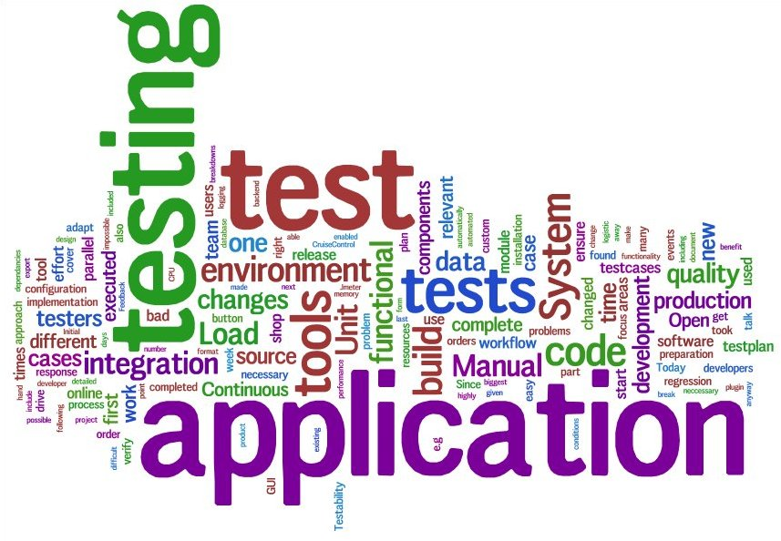

PMPL-Artikel
Menu
Rumah
Tentang Saya
Upload Artikel
Artikel Saya
Tujuan pengujian dalam proses pengembangan perangkat lunak
Batasan pengujian perangkat lunak
Pengujian perangkat lunak dalam ruang lingkup SDLC pengembangan perangkat lunak
Temukan Artikel
-----------------------------------Halaman Artikel-----------------------------------
8 min
Tujuan pengujian dalam proses pengembangan perangkat lunak
31k Pembaca
3 jam lalu
5 min

batasan pengujian perangkat lunak
42K Pembaca
1 jam lalu
7 min
pengujian perangkat lunak dalam ruang lingkup SDLC pengembangan perangkat lunak
64K Pembaca
2 jam lalu